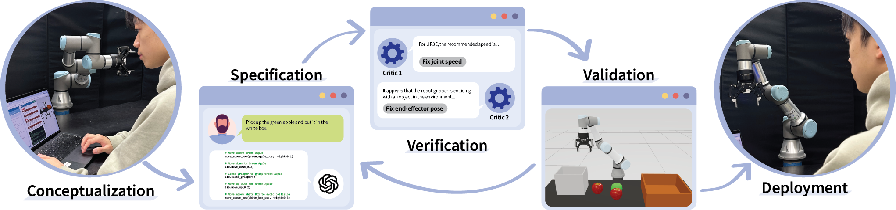

RoboCritics: Enabling Reliable End-to-End LLM
Robot Programming through
Expert-Informed Critics
HRI 2026
Department of Computer Sciences, University of Wisconsin–Madison

Large language models (LLMs) are increasingly used to generate robot programs from natural language instructions. However, ensuring the safety and reliability of these generated programs remains a critical challenge. We introduce RoboCritics, a system that augments LLM-based robot programming with expert-informed motion-level critics that analyze execution traces for problematic patterns. These critics detect issues such as joint speed violations, collisions, and unsafe end-effector poses, and provide actionable feedback for iterative improvement. Our interface surfaces transparent feedback and provides single-click correction options that feed structured messages back to the LLM. A user study with 18 participants demonstrated that this approach enhanced program reliability and reduced safety violations compared to systems lacking such verification mechanisms.
@inproceedings{10.1145/3757279.3785550,
author = {Kim, Callie Y. and White, Nathan Thomas and He, Evan and Sala, Frederic and Mutlu, Bilge},
title = {RoboCritics: Enabling Reliable End-to-End LLM Robot Programming through Expert-Informed Critics},
year = {2026},
isbn = {9798400721281},
publisher = {Association for Computing Machinery},
address = {New York, NY, USA},
url = {https://doi.org/10.1145/3757279.3785550},
doi = {10.1145/3757279.3785550},
abstract = {End-user robot programming grants users the flexibility to re-task robots in situ, yet it remains challenging for novices due to the need for specialized robotics knowledge. Large Language Models (LLMs) hold the potential to lower the barrier to robot programming by enabling task specification through natural language. However, current LLM-based approaches generate opaque, "black-box" code that is difficult to verify or debug, creating tangible safety and reliability risks in physical systems. We present RoboCritics, an approach that augments LLM-based robot programming with expert-informed motion-level critics. These critics encode robotics expertise to analyze motion-level execution traces for issues such as joint speed violations, collisions, and unsafe end-effector poses. When violations are detected, critics surface transparent feedback and offer one-click fixes that forward structured messages back to the LLM, enabling iterative refinement while keeping users in the loop. We instantiated RoboCritics in a web-based interface connected to a UR3e robot and evaluated it in a between-subjects user study (n=18). Compared to a baseline LLM interface, RoboCritics reduced safety violations, improved execution quality, and shaped how participants verified and refined their programs. Our findings demonstrate that RoboCritics enables more reliable and user-centered end-to-end robot programming with LLMs.},
booktitle = {Proceedings of the 21st ACM/IEEE International Conference on Human-Robot Interaction},
pages = {914–923},
numpages = {10},
keywords = {human-robot interaction, large language models (LLMs), robot programming, user-centered design},
location = {Edinburgh, Scotland, UK},
series = {HRI '26}
}